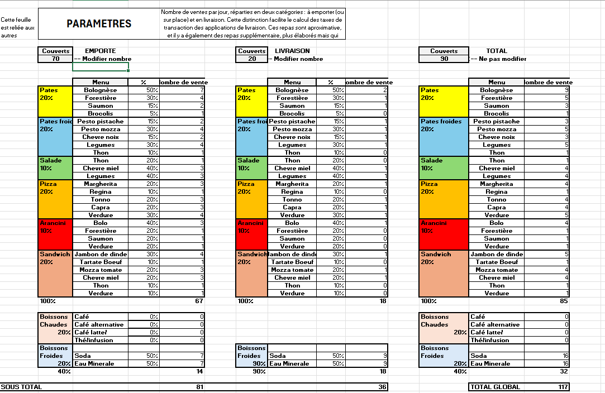
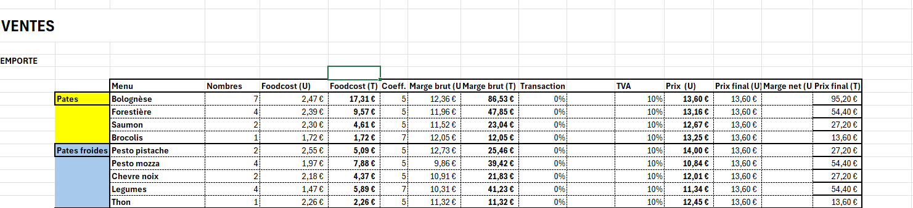
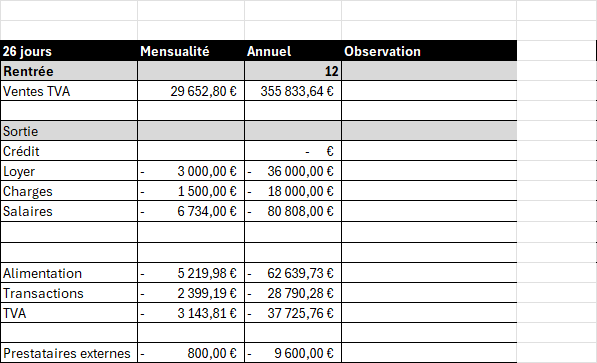
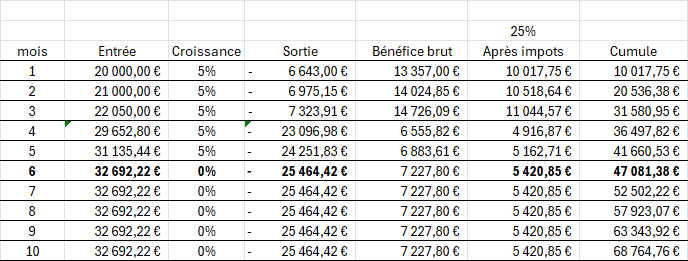
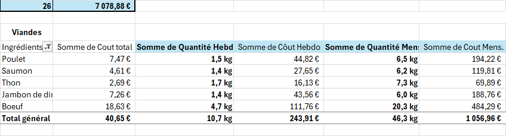
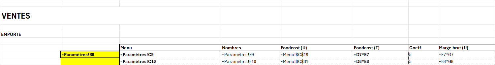

Excel — Modèle 01
Mensana — modèle d'exploitation et de rentabilité
Exercice de modélisation financière : reconstituer l'exploitation prévisionnelle complète d'un restaurant de restauration saine, du coût matière au prévisionnel sur cinq ans. Mensana est un nom de marque inventé.
Contexte
L'objectif était de bâtir un modèle unique reliant la fréquentation, le coût matière des recettes, la grille de ventes, les charges d'exploitation, le personnel et le financement, afin d'établir un compte de résultat prévisionnel et une projection sur cinq ans.
Méthode
Le classeur regroupe plusieurs blocs reliés entre eux :
- paramètres de fréquentation : couverts répartis entre emporté et livraison, et répartition du menu ;
- catalogue d'ingrédients sourcés et fiches techniques : calcul du coût matière par recette ;
- grille de ventes : quantités par plat, coefficient appliqué et marge brute ;
- calcul des bénéfices : charges variables et invariables, seuil de rentabilité ;
- bénéfice prévisionnel : projection mensuelle et annuelle sur cinq ans ;
- personnel : masse salariale et planning de présence ;
- financement de départ : besoin d'investissement et de fonds de roulement ;
- analyse des données par tableaux croisés dynamiques.

Résultat
Les tableaux ci-dessous reprennent les hypothèses de fréquentation et la projection prévisionnelle issues du modèle.
| Canal | Couverts |
|---|---|
| Emporté | 70 |
| Livraison | 20 |
| Total | 90 |
| Année | Chiffre d'affaires | Bénéfice brut | Après impôts | Cumulé |
|---|---|---|---|---|
| 1 | 352 683,76 € | 106 141,94 € | 79 606,46 € | 79 606,46 € |
| 2 | 370 317,95 € | 111 449,04 € | 83 586,78 € | 163 193,23 € |
| 3 | 388 833,84 € | 117 021,49 € | 87 766,12 € | 250 959,35 € |
| 4 | 408 275,54 € | 122 872,56 € | 92 154,42 € | 343 113,77 € |
| 5 | 428 689,31 € | 129 016,19 € | 96 762,14 € | 439 875,92 € |
Captures du modèle





Fonctions et formules utilisées
Le classeur combine agrégations, arrondis, calculs horaires, lecture de tableaux croisés dynamiques et liaisons entre feuilles :
SOMME— agrégation des ventes, des coûts et des totaux par période ; utilisée aussi par les cœurs de tableaux croisés dynamiques.ARRONDI— arrondi des prix et des coûts à l'unité commerciale.NBVAL— comptage des références actives d'une liste.TEMPS— construction des plages horaires du planning.MOD— découpage des horaires en tranches régulières.LIGNE— indexation des lignes pour lier les blocs entre eux.LIREDONNEESTABCROISDYNAMIQUE— lecture des résultats d'un tableau croisé dynamique.- Tableaux croisés dynamiques — 9 analyses croisées du modèle (coûts matière, planning).
Ce que cela démontre
Construction d'un modèle d'exploitation complet et cohérent, du coût matière au prévisionnel pluriannuel. Maîtrise des tableaux croisés dynamiques et des fonctions d'agrégation et de calcul pour l'analyse de gestion.